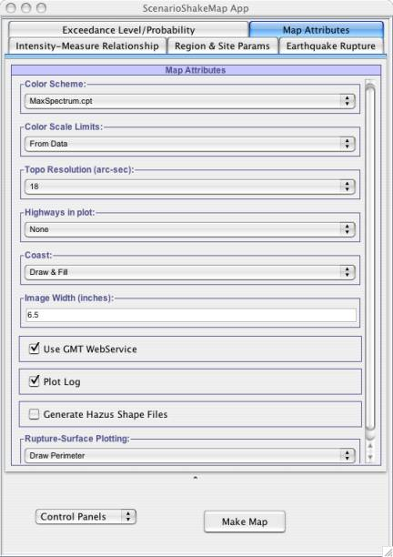

This panel becomes visible when user clicks on the Map Attributes tab in the main application. Parameters within this panel help the user in specifying the map image setting which is produced using the GMT(Geographic Mapping toolkit) script.
As shown in Fig - 1, user can set the Color Scheme for the map image. Following are the color schemes supported in our framework :
1) MaxSpectrum :???? (Color range)
2) STEP : ???? (Color range)
3) Shakemap : ???? (Color range)
User can specify color scale limits either from the data itself or can set it manually by making choice from Color Scale Limits parameter.
User can also specify which topographic file to use(3 sec grid spacing, 6 sec gridspacing, 18 sec grid spacing, etc). Currently we only have topographic data for California region. User can make his/her choice about the topographic file by selecting from parameter Topo Resolution (arc-sec).
If user wants to plot Highways in his Scenario shakemap, he/she can make that choice from Highways in plot parameter.
User can specify how coastline to be shown in the map image by selecting from parameter Coast.
Image width can be specified using Image Width(inches) parameter.
User can choose to add the Rupture surface in the map image by selecting from Rupture-Surface Plotting parameter. This will create a discrete boundary in the region for the earthquake rupture surface.
Above specified parameter values are used in creating the GMT script that will eventually create the map image.
Apart from above specified parameters user has the option of either generating the Scenario shakemap of the linear values or log values. If user chooses to generate the Log Plot then Plot Log parameter must be Checked, it will then convert convert all the data values to Natural Log values, then create the Scenario shakemap of these log values
Use GMT WebService parameter should always be checked so that application can use GMT on the server, else it will try to find on the local machine where this application is running. User does not have to worry about this parameter, as long Select Map Calculation Method from Controls Panels at the bottom of the application has be set to Use Server. As long as it is selected all the computation and map generation will be performed on the server. Refer to section - ????
Using this application user can generate Hazus Shape files that goes inside the Hazus software for loss estimation. If the parameter Generate Hazus Shape Files parameter is checked then application will generate Hazus shape files for the selected IMT(Intensity Measure Type).
Note : This application generate Hazus shapefiles which cannot be imported directed to Hazus-MH. They have to be first converted to files that Hazus-MH can accept using Arc-GIS. But shapefiles generated using this application can be imported directly to earlier version of Hazus, it is just these files have to converted to format that Hazus-MH understands.
If user has chosen to generate the shapefiles for Hazus then Plot Log option must be unchecked because shape files can only be generated for the linear data values. So if both Plot Log and Generate Hazus Shape Files options are checked user application will throw Error Message back to user saying that You cannot make Hazus Shapefiles with log-plot selected! .
This application provides very user-friendly error messages so user understands what went wrong in the application. Even after user has provided some incorrect inputs in the application, he/she will be prompted with error message, describing the nature of the error. Once user is notified with the error, he/she can correct the input and redo the calculations. Once an error message is thrown by the application, it will remain in the same state until user fixes the error. But if application does crash due to some reason, a window (Bug Report window) will launched that will allow user to send email to the OpenSHA group describing the problem and what was user trying to do when the exception occurred.
|  |
| Fig -1: Setting the values for the parameters that are needed to create the GMT (Geographic Mapping Toolkit) script using which Scenario Shakemaps are produced. |